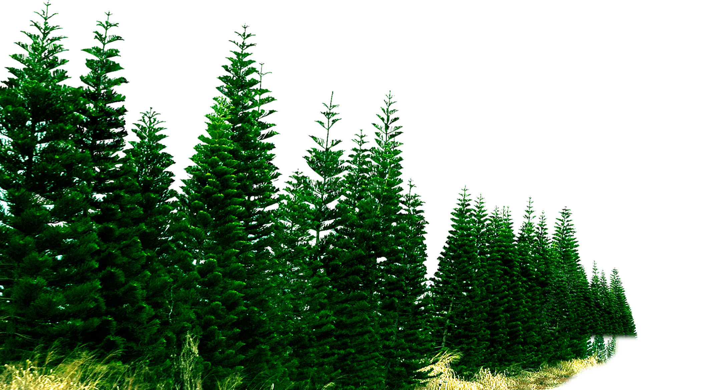

How rich are the rainforests? They are the richest habitats on earth, containing 50 per cent of the world's plants. Just 2.5 acres of tropical rainforest can contain 600 species of trees. The forests also contain untold riches in the shape of timber, fruits and herbs that can be used as food and medicine. The rainforests are important not just for their rich wildlife, but also because they help to preserve climate and soil stability. Without them, climate change would almost certainly accelerate - the forests help preserve the atmosphere, releasing huge quantities of water vapour and oxygen, and absorbing carbon dioxide.
The world's largest rainforest is around Brazil's Amazon River, and also along the foothills of the Andes Mountains. The world's main areas of tropical rainforest are in South and Central America, in West and Central Africa, in Southeast Asia and in northern Queensland, Australia
In summer the temperate deciduous forests are humming with life - birds and insects call from the trees, mice and voles rustle in
the undergrowth, and plant growth is at its height. The leaf canopy is fully developed, cutting out much of the sunlight from the
forest floor. Nevertheless, most forests have well developed shrub and herb layers as well, with plants such as roses, honeysuckle,
dogwoods and hazel, and flowers including anemones, sorrel and bluebells.
Many temperate forests are not natural, but have been managed for centuries to provide timber. Traditional mansgement involves a
rotation of timber extraction, with only a proportion of the tree being removed at one time. This allows the forest to regenerate.
Sometimes poles are cut from trees, and the trees can Then re-sprout from the base, to provide another crop of poles later. This is called
coppicing.
How does the plant life change as you go up a mountain?
Conditions generally get harsher, the higher you go up a mountain, and the plant life reflects this.
There may be temperate woodland in the lowlands, but as you climb, this changes, typically to coniferous woodland, then to mountain scrub,
then to grassland, then again, with increasing height, to a tundra-like vegetation, and to rocky screes and snow-patches.
WHY DO DIFFERENT PLANTS GROW ON DIFFERENT SIDES OF A MOUNTAIN?
Different sides of a mountain have different climates. On the south side (or north side in the southern hemisphere),
there is more sunshine and conditions are warmer, while on the other side the snow and ice stay on the ground much longer.
HOW CAN PLANTS SURVIVE THE SNOW AND ICE?
Few plants can survive being completely frozen, but many can thrive under the snow. Snow acts like a blanket to keep the freezing ice and wind at bay, and saves the plants from being killed.
Alpine grasses stay alive and green under the snow, ready to grow again as soon as it melts.